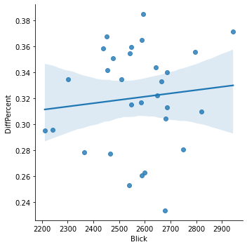

Tops and flops of the month
In a nutshell: what was the best and worst day of the month in the competition for visits between Blick and 20 Minuten?
September 2021 daily visitors
In a nutshell: what was the best and worst day of the month in the competition for visits between Blick and 20 Minuten?
Woaw!
On 20.09.2021, Blick was closest to 20 Minuten, with a 23% difference in visits only (that's 8% smaller than average).
This day, we had 2,677,800 visits (vs 3,386,800 for 20 Minuten).
This was our #8 day of the Month in terms of visits.
These were the most trending Twitter topics in Switzerland on that day:
#BTSatUNGA, #OurPrideBTS, #StopitTamedia, #GotARMYRightBehindYou, #KCORP
Well, not so good…
On 13.09.2021, Blick was really distanciated by 20 Minuten, with a 38% difference in visits (that's 6% more than average). This is our worst day in the battle.
This day, we had 2,594,000 visits (vs 3,830,400 for 20 Minuten).
This was our #13 day of the Month in terms of visits.
These were the most trending Twitter topics on that day:
#Triell, #HRC48, #USOpen, Ueli, Medvedev
For each day, the top news of the days for Switzerland, according to a service called Gnews.io.
Unfortunately, we are not so sure the data is reliable, but the very reliable Google doesn't provide a history of top news.
Linear correlation between # of visits and gap between Blick and 20 Minuten?

Pearson's R: (0.10552916800734478, 0.5788944940758493)